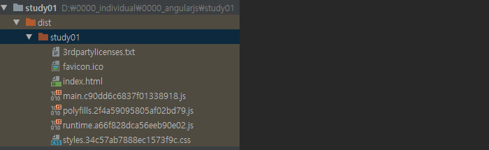

//angular cli 설치하기
npm install -g @angular/cli
//angular cli 업데이트
ng update -g @angular/cli
//angular cli 삭제하기
ng uninstall -g @angular/cli
//angularjs를 사용하기 위한 프로젝트를 생성한다.
ng new toh
//angularjs 프로젝트 배포파일 생성
ng build --prod
위의 명령어 실행시 dist폴더 하위에 배포파일이 생성된다. 
//bootstrap, ng-bootstrap 설치
npm install --save bootstrap
npm install --save @ng-bootstrap/ng-bootstrap
npm install --save bootstrap @ng-bootstrap/ng-bootstrap
//jquery 설치
npm install --save jquery
npm install --save @types/jquery
npm install --save jquery @types/jquery